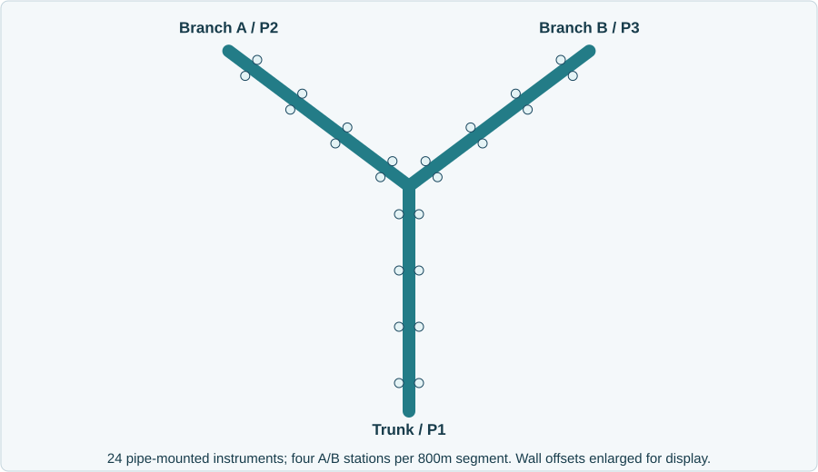

Possible release?
Corroborate physical evidence across usable sensors and failure domains.
01 / Problem · 00-01 min · fictional offshore gas operator
NorthSea Integrity Operations depends on a few experts to investigate a growing network. Make reviewed knowledge reusable, guide newcomers and surface warnings without waiting for an AI report.
Corroborate physical evidence across usable sensors and failure domains.
Offer a station-supported inspection interval, never an invented exact leak coordinate.
Explain procedures, evidence and gaps to newcomers. Knowledge transfer needs pilot validation.
Before the clock: prepare new brief-aligned S1/S2/S4/S5 pressure generations. Keep genuine pressure LIVE receipts available; do not expose credentials.
Say: the customer already has anomaly detectors. My marine data-quality research motivates helping engineers investigate those alerts and decide where to inspect. This is synthetic pressure decision support, not validated leak protection.
At 01:00: discuss the two-sided cost of a wrong investigation decision.
02 / Problem · 01-03 min
Unnecessary offshore personnel, vessel or ROV mobilization.
High inspection cost, operational disruption and declining trust in alarms.
Environmental harm and liability; oil-line spills add cleanup exposure.
Serious regulatory violations can threaten licences, including possible revocation under applicable law.
"Our dashboard is cheaper. Show that AI reduces triage effort without hiding real leaks or exporting our operational data."
Do not optimize alarm reduction while concealing missed-event risk.
Mobilization economics are discovery assumptions. Licence revocation is conditional, not automatic; source boundaries: engineering report.
Discovery hypothesis: costly inspection is the false-positive side; environmental damage is the false-negative side. Do not invent vessel rates, spill probabilities or a licence-loss certainty.
Objections: existing dashboard cost, integration, safety liability, localization credibility and hosted inference. Acknowledge them rather than claiming AI fixes all five.
At 03:00: introduce the two stakeholders and the research-to-product boundary.
03 / Problem · 03-05 min
Budget owner: inspection effort, adoption, delivery time and accountability.
"What will four weeks prove, and who owns a wrong recommendation?"
Calibration, provenance, failure domains, environmental confounders and reproducibility.
"Could a shared gateway explain these alarms? Show me the raw evidence."
My RE 2023 research motivates accuracy, currentness, completeness and consistency. The demo's localization is a new simplified extension, not a thesis-validated capability.
Thesis Paper C, PDF pp. 162-164; defense slides 16, 18-21 and 47. Prospect and requirements are hypotheses, not a claimed customer interview.
Ask in role: Is your larger bottleneck deciding whether to mobilize, identifying an inspection section, or validating instrumentation? What evidence would change that decision?
Research boundary: distributed sensing and use-case-specific quality requirements inform the design. I do not claim to have deployed edge AdapAD or calibrated leak localization from the thesis.
At 05:00: switch into the live demonstration. This ends the five-minute problem segment.
04 / Live demo · 05-07 min

Replay → pause → inspect → ask. 60s window / 5s hop; answers stay pinned.
Fresh hosted investigations took about two minutes per question in the latest browser run. Label retained evidence as recorded; SCRIPTED is not LIVE.
Orient: show the same upright Y as the brief: Trunk P1, Branch A P2 and Branch B P3. Demo assumptions are three 800m segments, four paired stations per segment at 100/300/500/700m, 24 pipe-mounted instruments and 0.6m pipe diameter. Wall offsets are enlarged for readability. A/B share a gateway, not independent evidence.
Prepare before the clock: create LIVE S1 and S4 generations and preserve accepted S1 answers. The latest two reviewed S4 turns took 145s and 223s; do not promise three fresh investigations inside ten minutes.
Do: demonstrate replay movement, pause and compare nearby pressure histories on common axes. Open prepared S1 questions as recorded LIVE results with their exact basis; run one fresh S4 investigation while discussing sources and limits.
Fallback: announce preserved pressure runs and recorded receipts. Never call SCRIPTED output hosted inference or silently rebase a recorded answer.
At 07:00: demonstrate the brief's first two questions.
05 / Live demo · 07-11 min · S1
Open the investigation handoff: explanation, checked interval, competing causes and next review step. Click references; download the exact-window evidence packet.
Possible leak; separate sensor faults coexist.
Trunk / P1: inspect 200-600m.
Affected stations: 300/500m.
Unaffected brackets: 100/700m.
Station midpoints define an inspection priority, not an estimated leak point. Verify valve/compressor changes and shared failures with the engineer.
The agent organizes the investigation. Numerical evidence bounds the inspection area.
Reproducible source-linked example: brief-evidence.json; current receipts: qualification.
Do: compare P1-ST2 and P1-ST3 pressure histories, then ask the first two exact customer questions. Show the explanation of station midpoints and the concurrent quality issue. Open the structured handoff, click a numerical reference and download the versioned packet.
Check: sustained overlapping drops, connected-pipe distance, multiple stations and independent gateways. Numerical methods flag evidence; agents interpret and cite it. The packet is not engineer approval or an inspection dispatch.
At 11:00: contrast scattered faults and unresolved causes.
06 / Live demo · 11-15 min · S2 / S4 / S5
"What evidence supports this, and what remains unknown?"
Open the valve record and before/after comparison. Read the competing causes; draft a verification question on the same window.
The operating explanation is plausible, not proof that no leak exists.
S2: maintenance plus observed faults supports instrumentation review, not a proven failed component.
S5: missing observations still prevent a leak conclusion or inspection location.
An accepted abstention is a useful, checked answer — not a successful leak diagnosis.
Readable sources and measured comparisons precede expandable execution receipts. Recorded evidence and limitations; recorded is not a fresh live call.
Do: at S4 source clock 185s, ask question three. Open OP-VALVE-001 in the handoff and inspect its revision, incident-time availability and actual text. Open the comparison table: measured medians, usable counts and source scope. Explain command versus verified valve response.
Follow-up: click a generated verification question. It drafts only, stays pinned to the original window and requires explicit submission. If time and rate limits permit, submit it; otherwise show the retained genuine two-turn browser evidence as recorded.
Contrast: show prepared S2 maintenance evidence and S5 coverage loss; label prepared answers as recorded. No location appears when physical support is missing.
Explain: the agent selected the read-only evidence checks and explained them. It did not calculate the numbers, establish causation or control a valve.
At 15:00: stop the demo and begin the whiteboard discussion.
07 / Technical whiteboard · 15-19 min
Synthetic arrivals → canonical buffer → 60s/5s/5s windows → quality, hypothesis and fit ledger.
PostgreSQL 16: immutable snapshots/corpus, full-text history retrieval, scoped receipts and LangGraph checkpoints.
Quality → diagnosis chooses search/read/compare → checked response. LangChain wraps hosted Copilot CLI inference.
FastAPI/Pydantic → authenticated SSE → TypeScript/esbuild console. Native OTel → local Langfuse/Jaeger.
CustomerOps-style durable authority. NumPy adds the marine numerical layer.
Draw: two loops, the shared snapshot boundary and the UI projection. Put the hosted inference boundary outside the customer's intended deployment boundary.
Discuss: backpressure, bounded episode-triggered roots and why an LLM request is not scheduled for every five-second hop.
Code: src/subsea_copilot/monitoring.py, runtime/workflow.py, store.py and telemetry.py.
At 19:00: move from system boxes to one dirty observation's journey.
08 / Technical whiteboard · 19-23 min
Window: [end - 60s, end) Hop: 5s Allowed lateness: 5s Use only observations released by the source clock.
Late evidence creates immutable revisions. Baseline pre-roll must be verified normal and available before the replay epoch.
History also has quality: incident-time visibility, current approval and conflicting revisions.
Draw: one raw record's observed/received times, then a document's authored/available/effective times. Corpus hash and snapshot pin the investigation.
Challenge: a future inspection report is invisible. Draft/superseded/expired records may be read as counterevidence, not current authority. Pressure comparisons filter arrivals before normalizing duplicate conflicts.
Thesis link: accuracy, currentness, completeness and consistency have different operational consequences; full standards integration is not claimed.
At 23:00: derive the physical hypothesis.
09 / Technical whiteboard · 23-27 min
z = (value - baseline median) / scale scale = max(1.4826 × MAD, pressure floor)
Frozen median/MAD stand-in for existing ML. Require overlapping negative pressure alerts, nearby connected stations and independent failure domains. Check counterevidence before suspecting a leak.
Missingness alone never proves a leak. A shared failure can also be spatially coherent.
Draw: the brief's Y and a separate gateway graph. Screen proximity and independent evidence are different.
Derive: fit the normal median and MAD; pressure drops cross the negative five-scale threshold. Require 15s overlapping alerts, three instruments, two stations and two failure domains. Current network radius is 400m.
Counterexamples: short transients, opposite paired offsets, common-mode operating changes and source loss. No valve/compressor connector is claimed.
At 27:00: derive an inspection interval.
10 / Technical whiteboard · 27-31 min
Unaffected: 100m 700m Affected: 300m 500m Lower = (100 + 300) / 2 = 200m Upper = (500 + 700) / 2 = 600m Priority interval: [200m, 600m] 400m midpoint is NOT a leak estimate.
Station spacing limits this heuristic. It is not a negative-pressure-wave or calibrated hydraulic localization method.
Recommend where to investigate. Do not manufacture precision.
Derive: use station chainage, not pixel distance. Bracket affected Trunk stations with usable unaffected stations, then calculate the midpoints.
Invite: what happens if the outer reference station rises, stops reporting or disagrees with its peer? The inspection bracket is withheld rather than treating missing data as normal.
Open: localization.py and the claim's station_bracket_m. The profile is illustrative, not a hydraulic simulator. At 31:00, separate agent work from this arithmetic.
11 / Technical whiteboard · 31-35 min
Checks coverage, conflicts and sensor patterns.
Quality facts are not proof of a physical event.
Selects history searches, documents and pressure comparisons.
Cannot override numerical event/location limits.
Interprets engineer questions and competing causes.
Cites evidence and asks verification questions.
Observe → select evidence → act read-only → check. Real abstention propagates.
Code checks claims and authority. A separate same-model critic reviews every paragraph against original sources; revise once, re-review or withhold. Human review remains required.
Draw current behavior: quality, diagnosis search/read/compare, response, then separate critic context. Reuse requires matching snapshot, versions and corpus pin. This is serial cooperation, not voting for truth.
Criticism and reflection: code checks numerical claims and authority. The critic sees original sources and every answer/cause/question, not hidden author reasoning. Code checks exact paragraph coverage and source quotes. One interpretation-only revision is allowed, then fresh review; reject, fail, time out or exhaust budget and the report is withheld.
Preserve the failure: the pre-fix citation-only audit accepted an invented inspection photograph. Keep its passed:false artifact. New reports require a result/source-hash-bound application attestation. Archived answers are not retroactively reviewed.
Honest independence: separate prompt and checkpoint, same underlying model. Exact quotes do not prove entailment; common-mode model mistakes remain possible. Show current qualification and retained failures in RESULTS.md; never promise hallucination-free answers.
At 35:00: explain recovery and bounded execution.
12 / Technical whiteboard · 35-39 min
An evidence layer needs recoverable state and truthful counters, not just agent prompts.
Draw: task reservation, checkpoint/WAIT handoff, external inference and fenced acceptance. Do not claim exactly-once hosted execution or production HA.
Show: the current pressure receipt's verified_trace_ids in Langfuse. Keep credentials off screen. Stored role/tool/guardrail observations are stronger evidence than exporter HTTP success.
At 39:00: explain what each evaluation denominator does and does not establish.
13 / Technical whiteboard · 39-42 min
Observable leaks: 20/20 detected/bracketed. All leaks: 20/40; S5 remains unobservable.
First attempts; 3 failures withheld. Explicit retries: 3/3. Fixed reports: 18/18.
p95: 170s; fixed p95: 0.88s. Numerical warnings never wait for the LLM.
Six scenarios × three questions. All 13 operation checks pass on accepted reports. Three first-attempt failures remain in the denominator.
Accuracy and reliability first. A faster unsupported answer still fails.
Matched operations, cases and receipts · All cohorts and retained failures
Current cohort: all six scenarios and three customer questions, seed 91000, actual engineer-v2 workflow versus actual zero-LLM fixed reports on identical data. Agents deliver 15/18 correct structured reports within 300s; fixed reports 18/18. Agent all-attempt p50/p95 are 129s/170s, fixed 0.562s/0.881s. This does not support a speed or reliability advantage over rules.
Operations: inspect actual planning, quality-to-diagnosis-to-response handoffs, tool arguments/results, source-time authority, reuse, model phases, final attestation, counters and idempotence. All thirteen checks pass on the fifteen accepted reports. Of 192 unique tool receipts, 154 are application-required and 38 are model-requested history actions. Do not call mandatory reads autonomous reasoning.
Criticism: five reports need actual revision and re-review. Examples include overstating an acknowledged valve command as verified execution and turning possible log omissions into definite omissions. Not every critique is a proven hallucination; some concern citation or verification gaps. Same-model review is not independent semantic adjudication.
Failures and retry: S3/Q2 hits Windows capture-cleanup PermissionError; S6/Q2 and Q3 hit the 60s provider-call timeout. All withhold reports. Bounded local cleanup retries now preserve provider error metadata and never retry inference. On explicit user retry, all three new roots pass in 119-126s, using nineteen observed requests. Preserve 15/18 first-pass reliability and the failed cohort; do not relabel it 18/18 or claim a five-minute recovery from the original question.
Denominators: structured rubric correctness is not independent prose accuracy or field validation. S5 abstention is not leak detection; mature numerical all-leak detection remains 20/40. Prior real-browser, injected-attack and seven-case critic cohorts remain separate. The first operations run uses 112 call attempts, with 109 observed model identities; human effort and USD cost are unmeasured.
At 42:00: compare the stronger fixed alternative.
14 / Technical whiteboard · 42-45 min
| Boundary | Choice | Reason / cost |
|---|---|---|
| Measurements and topology | Existing ML + numerical methods | Graph ML is valid; no better-coordinate claim. |
| Engineer questions and RCA context | Bounded read-only agent investigation | Choose evidence checks; explain competing causes. |
| Review and handoff | Checked, exact-window evidence packet | Readable sources; explicit gaps; human review required. |
Standard reports: fixed 18/18 and faster; agents 15/18 initially, then 3/3 retries. Separate priority lab: hosted 15/16, rules 12/16. Prefer rules where equally useful.
Buy measurable investigation value, not a claim that only agents generalize.
Measure review effort, evidence completeness, inappropriate recommendations and total cost. No measured labor savings. Cases, caveats and receipts.
Own the fixed win: the new eighteen-case matched report benchmark favors the quality-aware fixed workflow: 18/18 versus 15/18 first attempts, and under one second versus roughly two minutes. Three explicit agent retries succeed separately. Same accuracy plus faster agents has not been demonstrated. A rules alert plus human investigation is a different workflow; measuring it requires a timed, quality-matched engineer study.
Separate task: sixteen authored inspection-priority cases share identical numerical brackets and records. Hosted interpretation matches 15/16; context-aware rules 12/16; numerical-only 10/16. Four wins, one conservative loss, eleven ties. Neither comparator unjustifiably demotes a priority area under the synthetic rubric.
Show a win: LC05 distinguishes paperwork marked pending from field execution; LC07 separates a withdrawn hold instruction from the later pressure change; LC08 follows the corrected asset; LC11 distinguishes cancelled and executed work slots. Geometry stays code-owned. Lower priority is not leak clearance.
Show the loss: LC15 requests branch-name mapping and timing verification, retaining both areas; the lab omitted the friendly topology names. Preserve the mismatch rather than tuning a perfect score. Two missing-support cases are code-owned abstentions, not LLM wins.
Boundaries: the priority lab is separate from the console workflows, not an external blind trial. Fourteen hosted calls, mean 16.66s; USD cost and human-effort savings unknown. It suggests where interpretation may add value but does not erase the standard-task fixed win.
At 45:00: propose a time/quality comparison before commercial rollout, not production safety use.
15 / Business discussion · 45-48 min
Reviewed alert volume × verified investigation time reduction × agreed loaded engineering cost - integration and operating cost
Customer inputs are unknown. No avoided-spill value, guaranteed inspection saving or licence-loss probability is priced into this demo.
Compare against the existing workflow. Never trade safety sensitivity for a prettier ROI.
Ask the budget owner: What fraction of alerts requires expensive offshore escalation, and what can be safely resolved with better evidence? Who approves the decision?
Cost model: pilot engineering/integration, data/QC work, infrastructure, inference entitlement and ongoing operations. No vendor price or USD model cost is available.
Do not: multiply speculative avoided spills or licence loss into a guaranteed savings headline.
At 48:00: offer a bounded delivery contract with measurable gates.
16 / Business discussion · 48-52 min
Connector/schema, baseline, failure-domain map and security review.
Gate: approved data path and usable source contract.
Elicit expert procedures; replay cases; adversarial grounding review.
Gate: approved knowledge and adjudicated error labels.
Shadow workflow; expert/newcomer review; outage and load tests.
Gate: no observed unsupported/unsafe assertions.
Accuracy, abstention, 5min report budget, knowledge transfer and cost.
Gate: quality first; revise or stop on failure.
Commit only after scope, pricing, safety thresholds and acceptance criteria are jointly agreed.
Conditional plan, not a guaranteed integration deadline. No sensitivity claim without labeled events or validated tests.
Business contract: fixed scope is one network, read-only access and named integrity/security owners. Pricing and staffing are agreed after discovery; four weeks is contingent on data approval and availability.
Acceptance: compare median triage effort and reviewed false alarms to baseline; separately assess missed-event sensitivity. Coverage failure remains unknown, not healthy. Agree numerical targets with the customer, not after seeing the results.
Exit: stop if approved data access, credible labels/tests, physical support or operator adoption cannot be established. No automatic move to plant control.
At 52:00: address the remaining data/safety objection and ask for the conditional pilot.
17 / Business discussion · 52-55 min
Original synthetic demo, scoped read-only tools, authenticated console, durable evidence and hosted Copilot inference.
No historian/platform connector, certified leak protection, control endpoints, production identity or security certification.
Customer deployment boundary, source connector, data retention and inference destination.
This demo is not local-only. If hosted inference is unacceptable, resolve the architecture before real data is used.
"Will you sponsor a scoped shadow pilot, subject to integrity and security approval, with agreed stop gates and a joint baseline review?"
Expert knowledge becomes reviewable criteria and evidence — not unchecked model authority.
Positioning: AITOMATIC-relevant domain expertise, governed agent collaboration and forward-deployed integration ownership. Do not claim DanaOS or Falkor integration.
Handle privacy: the CLI runs locally but inference is hosted. Only synthetic evidence was sent. Customer data must not enter this route without an approved policy and architecture.
Ask: sponsorship for a conditional pilot, not a production purchase justified by synthetic metrics. Engineers retain inspection, emergency response and regulatory responsibilities.
At 55:00: explicitly leave the customer role and begin your questions.
18 / Out of role · 55-60 min
Say: I am now out of role. Choose the two questions most relevant to the discussion rather than rushing through all three.
Leave space: use the five minutes to listen and ask a focused follow-up. Do not restart the technical pitch.
At 60:00: close the meeting. The appendix is for interviewer-led questions, not extra scheduled presentation time.
Appendix A / On demand · no extra scheduled time
| Scenario | Challenge | What the reviewer should inspect |
|---|---|---|
| S1 | Nearby pressure drops plus a separate fault | Independent support, inspection bracket; history does not prove cause. |
| S2 | Scattered spikes, gaps and drift | Current maintenance versus stale revision; matched sensor comparisons. |
| S3 | Full-source telemetry outage | Source clock advances; physical state remains unknown. |
| S4 | Broad pressure change | Current valve log plus measured change; concurrent leak remains possible. |
| S5 | Leak with too few observers | Telemetry work order cannot restore missing physical evidence. |
| S6 | Normal pressure variability | No qualifying event is not a safety certification. |
History qualification covers S1/S2/S4/S5; the numerical hold-out covers all six. Synthetic context labels are not field root-cause labels.
Use only if asked: open synthetic.py and the frozen numerical evaluation report. Show labels belong to evaluation truth, not detector/model features.
Return: use the chapter buttons or slide selector. The global interview clock is not reset by appendix navigation.
Appendix B / On demand
Open the pressure cohort's verified_trace_ids in Langfuse.
Agent, generation, tool and guardrail observations must be stored, not just HTTP-accepted. Fresh browser feeds do not recreate historical events.
Current topology, exact question and pinned evidence. No substituted historical cohort.
Show: one original manual question, its persisted task and observed model receipt. Then inspect stored observations rather than an exporter success message.
Do not: interpret an empty fresh-browser audit panel as historical data loss or rerun hosted calls merely to recreate a receipt.
Appendix C / On demand
| Observed failure | Root-cause correction | Evidence boundary |
|---|---|---|
| Empty hosted history searches | Ranked keyword matching; contextual acceptance beyond numerical answers. | Initial 6/12 contexts retained, not advertised as a pass. |
| Follow-up input overflow | Compact input, one schema copy, finite 48k-character envelope; topology-expanded asset filters. | Call/time and physical-certainty gates unchanged. |
| Missing checkpoint bootstrap | Explicit migration, fail-fast startup, fresh/reopen/handoff tests. | Integrated database proof beyond isolated unit tests. |
| Long ingest lock / UI race | Bounded idempotent chunks; Agents focus before async task read. | Targeted contention and held-read browser regression. |
Senior FDE ownership means reproducing, fixing and retaining evidence, not hiding demo failures.
Pick one story: budget exhaustion to audited intake, or UI navigation race to deliberately held-read regression. Explain the actual symptom, root cause and test that would fail before the fix.
Boundaries: a private clone installed/built/generated successfully, but its pytest launcher was blocked by Windows Application Control; no second full-suite pass is claimed there.
Appendix D / On demand
Research grounding: thesis Paper C (RE 2023), defense 16/18-21/47. Public industry positioning: Falkor. Regulatory scenario: archived Norwegian Petroleum Act translation, sections 10-13/10-16; not current legal advice.
Original deck and diagrams. CustomerOps informs customer-first narrative, scoped specialists, durable evidence, failure ownership and explicit tradeoffs; its content/assets and private discussions are not copied. Detailed source boundaries: REPORT.md.
If asked about security: distinguish implemented demo controls from production certification. Inference is hosted, and customer data needs approval.
If asked about licences: the prospect is fictional; this is synthetic pressure monitoring. Serious or repeated regulatory violations can threaten a licence, not every missed leak automatically.